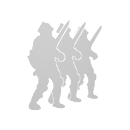
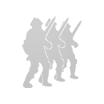

Характеристики
 Раса
Раса
 Пол
Пол
 Класс
Класс
 Заклинание
Заклинание
 Первичные навыки
Вторичные навыки
 Стартовая армия
Первичные навыки
Вторичные навыки
 Стартовая армия
 Специализация
Специализация
 Биография
Биография
?
Герои являются основными персонажами под контролем игрока. Они передвигаются по карте приключений, захватывают объекты и ведут за собой армию. Герои разных городов имеют предрасположенность к изучению тех или иных навыков. Кроме того каждый герой либо склонен к магии, либо к воинскому делу, что определяет его дальнейшее развитие.
Слева располагается панель фильтров. При наведении на каждое окошко появляется подсказка о назначении каждого фильтра. Поле поиска можно использовать не только для поиска по имени персонажа, но и по его отдельным характеристикам, например, введя слово "Некромантия", Вы увидите всех героев, обладающих этим навыком. Кнопка отмены сбрасывает все фильтры на значение по умолчанию и отменяет выбранного героя, это же действие происходит при нажатии клавиши Del.
Нажмите на интересующего Вас героя и на панели справа отобразятся все его характеристики, либо Вы можете переключаться между карточками героев с помощью стрелок на клавиатуре. При наведении на пункты "Первичные навыки" и "Стартовая армия" появится детальная информация о них.
Герои разделены на группы по замкам, к которым они относятся, при нажатии на знак "-" можно свернуть лишнюю группу. Нажимая Ctrl + ЛКМ, можно свернуть сразу все группы, а развернуть обратно клавишей Del.
Слева располагается панель фильтров. При наведении на каждое окошко появляется подсказка о назначении каждого фильтра. Поле поиска можно использовать не только для поиска по имени персонажа, но и по его отдельным характеристикам, например, введя слово "Некромантия", Вы увидите всех героев, обладающих этим навыком. Кнопка отмены сбрасывает все фильтры на значение по умолчанию и отменяет выбранного героя, это же действие происходит при нажатии клавиши Del.
Нажмите на интересующего Вас героя и на панели справа отобразятся все его характеристики, либо Вы можете переключаться между карточками героев с помощью стрелок на клавиатуре. При наведении на пункты "Первичные навыки" и "Стартовая армия" появится детальная информация о них.
Герои разделены на группы по замкам, к которым они относятся, при нажатии на знак "-" можно свернуть лишнюю группу. Нажимая Ctrl + ЛКМ, можно свернуть сразу все группы, а развернуть обратно клавишей Del.